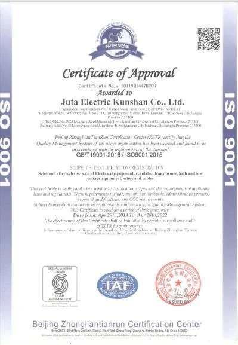
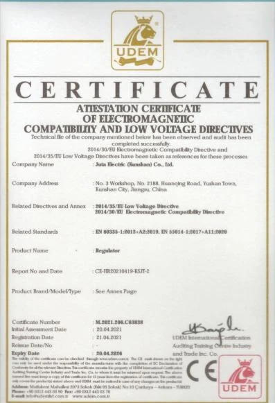
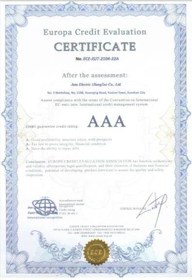

ISO 9001About Botley
Industrial power expertise, from Shanghai to the world.
Founded in 2015, Shanghai Botley Machinery integrates product development, manufacturing coordination, sales and technical service for industrial power protection applications.
Who we are
Focused on stable, safe and practical power systems.
Our portfolio includes voltage stabilizers, transformers, frequency converters, uninterruptible power supplies, integrated systems and power quality cabinets.
Commercial operations are headquartered in Shanghai, with the research and production base in Zhenjiang, Jiangsu. Our existing service network includes offices in several major Chinese industrial regions.
2015Company founded
7Core product families
50/60 HzGlobal grid applications
1 hourService response commitment
Certificates & credentials
Documented quality and product compliance.
Certificate scope and validity should be confirmed for the final product configuration and destination market.

CE documentation
AAA credit evaluationService promise
Support beyond delivery.
Botley states a one-hour technical response, a one-year standard warranty and continued technical support across the product service life. Maintenance and spare-part support can be planned around the installation.